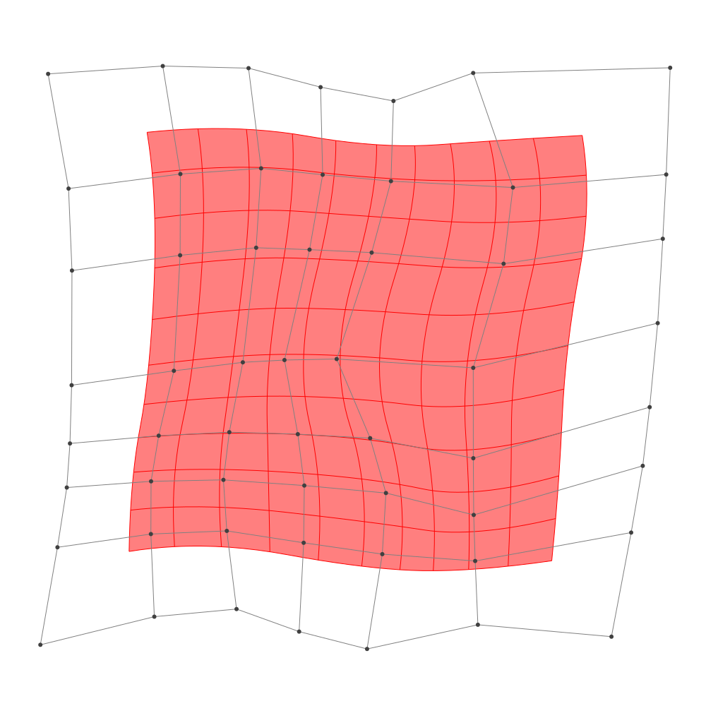
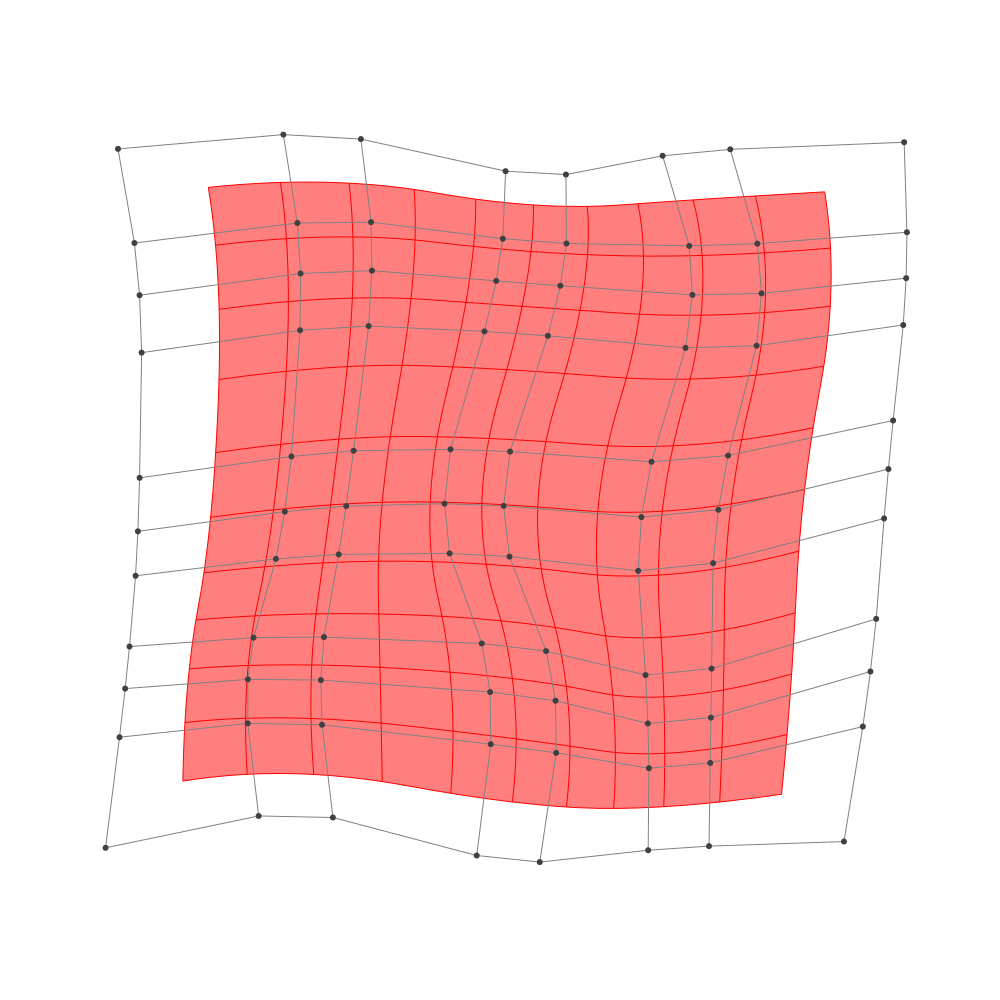

Refinement
BasicBSpline.refinement — FunctionRefinement of B-spline manifold with given B-spline spaces.
julia> p = 2 # degree of polynomial2julia> k = KnotVector(1:8) # knot vectorKnotVector([1.0, 2.0, 3.0, 4.0, 5.0, 6.0, 7.0, 8.0])julia> P = BSplineSpace{p}(k) # B-spline spaceBSplineSpace{2, Float64}(KnotVector([1.0, 2.0, 3.0, 4.0, 5.0, 6.0, 7.0, 8.0]))julia> rand_a = [SVector(rand(), rand()) for i in 1:dim(P), j in 1:dim(P)]5×5 Matrix{StaticArrays.SVector{2, Float64}}: [0.0719009, 0.36682] [0.475202, 0.668643] … [0.181456, 0.453218] [0.55473, 0.979613] [0.212972, 0.741399] [0.680142, 0.62447] [0.524907, 0.269933] [0.931384, 0.589592] [0.947808, 0.0257606] [0.268835, 0.650908] [0.204831, 0.156128] [0.202381, 0.46615] [0.16078, 0.482015] [0.626239, 0.939757] [0.992609, 0.540222]julia> a = [SVector(2*i-6.5, 2*j-6.5) for i in 1:dim(P), j in 1:dim(P)] + rand_a # random5×5 Matrix{StaticArrays.SVector{2, Float64}}: [-4.4281, -4.13318] [-4.0248, -1.83136] … [-4.31854, 3.95322] [-1.94527, -3.52039] [-2.28703, -1.7586] [-1.81986, 4.12447] [0.0249069, -4.23007] [0.431384, -1.91041] [0.447808, 3.52576] [1.76883, -3.84909] [1.70483, -2.34387] [1.70238, 3.96615] [3.66078, -4.01799] [4.12624, -1.56024] [4.49261, 4.04022]julia> M = BSplineManifold(a,(P,P)) # Define B-spline manifoldBSplineManifold{2, (2, 2), StaticArrays.SVector{2, Float64}, Tuple{BSplineSpace{2, Float64}, BSplineSpace{2, Float64}}}((BSplineSpace{2, Float64}(KnotVector([1.0, 2.0, 3.0, 4.0, 5.0, 6.0, 7.0, 8.0])), BSplineSpace{2, Float64}(KnotVector([1.0, 2.0, 3.0, 4.0, 5.0, 6.0, 7.0, 8.0]))), StaticArrays.SVector{2, Float64}[[-4.428099078706209, -4.133180267862459] [-4.0247978185434174, -1.8313566641721208] … [-3.9779809958134855, 2.042436584029456] [-4.318544402213546, 3.9532178084129517]; [-1.9452703474985047, -3.520387205738678] [-2.2870283938805582, -1.7586010604781763] … [-1.5520900641840134, 2.385033439540915] [-1.819857693375333, 4.1244703784621946]; … ; [1.7688346447132415, -3.849092383036374] [1.7048308918272261, -2.3438720057802556] … [2.36466899840626, 2.05798372191172] [1.7023805788370443, 3.966149797155618]; [3.6607799516682706, -4.017985272822005] [4.126238810722877, -1.5602428139445959] … [4.426843164573178, 2.2612122339269547] [4.49260917707747, 4.04022177413418]])
h-refinemnet
Insert additional knots to knot vector.
julia> k₊=(KnotVector(3.3,4.2),KnotVector(3.8,3.2,5.3)) # additional knotvectors(KnotVector([3.3, 4.2]), KnotVector([3.2, 3.8, 5.3]))julia> M_h = refinement(M,k₊=k₊) # refinement of B-spline manifoldBSplineManifold{2, (2, 2), StaticArrays.SVector{2, Float64}, Tuple{BSplineSpace{2, Float64}, BSplineSpace{2, Float64}}}((BSplineSpace{2, Float64}(KnotVector([1.0, 2.0, 3.0, 3.3, 4.0, 4.2, 5.0, 6.0, 7.0, 8.0])), BSplineSpace{2, Float64}(KnotVector([1.0, 2.0, 3.0, 3.2, 3.8, 4.0, 5.0, 5.3, 6.0, 7.0, 8.0]))), StaticArrays.SVector{2, Float64}[[-4.428099078706209, -4.133180267862459] [-4.186118322608534, -2.7520861056482557] … [-4.029065506773494, 2.32905376768698] [-4.318544402213546, 3.9532178084129517]; [-2.8142604034212013, -3.7348647774820014] [-2.862852776876016, -2.5643852240554343] … [-2.4451388129364857, 2.5350356559368623] [-2.694398041468708, 4.064531978944959]; … ; [1.7688346447132415, -3.849092383036374] [1.730432392981632, -2.9459601566827027] … [2.265325735470878, 2.3442086331983045] [1.7023805788370443, 3.966149797155618]; [3.6607799516682706, -4.017985272822005] [3.9400552671010347, -2.5433397974955594] … [4.436708066448822, 2.5280636649580384] [4.49260917707747, 4.04022177413418]])julia> save_png("2dim_h-refinement.png", M_h) # save image

Note that this shape and the last shape are identical.
p-refinemnet
Increase the polynomial degree of B-spline manifold.
julia> p₊=(1,2) # additional degrees(1, 2)julia> M_p = refinement(M,p₊=p₊) # refinement of B-spline manifoldBSplineManifold{2, (3, 4), StaticArrays.SVector{2, Float64}, Tuple{BSplineSpace{3, Float64}, BSplineSpace{4, Float64}}}((BSplineSpace{3, Float64}(KnotVector([1.0, 2.0, 3.0, 3.0, 4.0, 4.0, 5.0, 5.0, 6.0, 6.0, 7.0, 8.0])), BSplineSpace{4, Float64}(KnotVector([1.0, 2.0, 3.0, 3.0, 3.0, 4.0, 4.0, 4.0, 5.0, 5.0, 5.0, 6.0, 6.0, 6.0, 7.0, 8.0]))), StaticArrays.SVector{2, Float64}[[-3.944513112903598, -3.478093750687155] [-3.8049507583676028, -2.372185070377805] … [-3.6557735347582248, 2.5700920208163143] [-3.8199889231908597, 3.5112039425528776]; [-2.413470509855935, -3.1595712856762743] [-2.5222612575015564, -2.233675091510202] … [-2.0263802841371192, 2.769932543580251] [-2.1663304135001744, 3.6539297034960754]; … ; [2.0902188664817696, -3.4612476836190638] [2.102338874367146, -2.629260654855895] … [2.5731281892115048, 2.563515137098706] [2.3026551820996897, 3.506835130134265]; [3.4397595064418933, -3.415089263205936] [3.6283670516408093, -2.2655948739023373] … [4.069253372001702, 2.67747472260275] [4.041465175581056, 3.5777425372927523]])julia> save_png("2dim_p-refinement.png", M_p) # save image

Note that this shape and the last shape are identical.